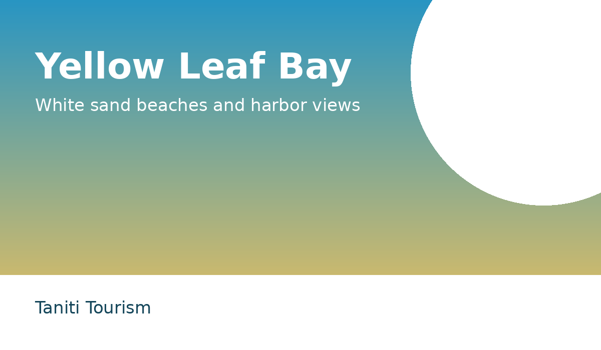
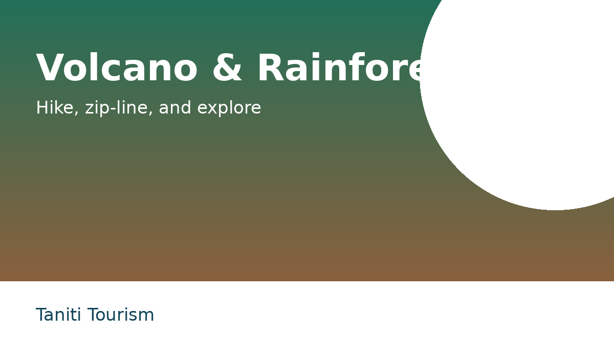
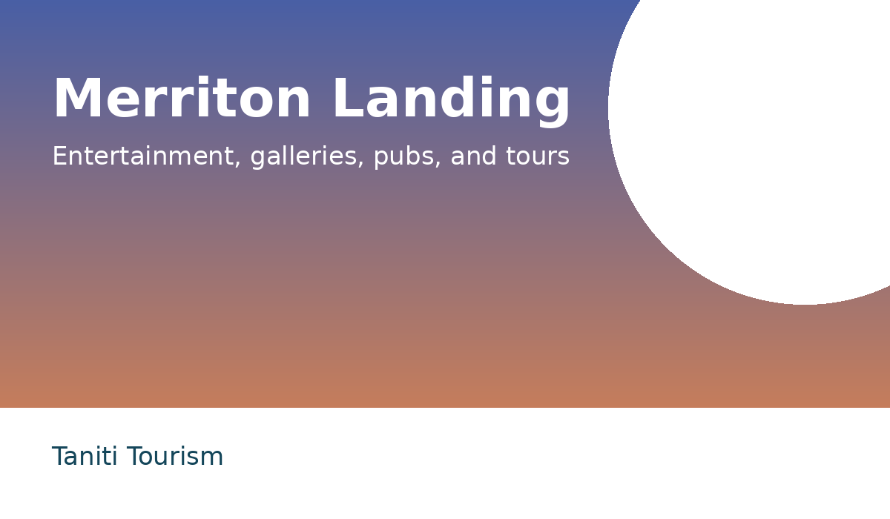

Find your island escape.
Discover Taniti's beaches, rainforest, volcano, local food, lodging options, and practical travel information in one mobile-friendly place.
Beaches, tours, volcano, rainforest Where to stay
Hotels, resort, B&Bs, homes Eat and shop
Restaurants and groceries Getting around
Airport, bus, taxi, rentals, safety
Popular Taniti experiences
See all activities
Rainforest and volcano
Hike through rainforest trails or visit the active volcano in the island interior.
Explore nature
Merriton Landing
Find pubs, galleries, entertainment, tours, and new attractions near Yellow Leaf Bay.
Visit Merriton LandingPlan a trip that fits your style
Taniti supports short cruise stops, family vacations, honeymoons, and longer repeat visits. This prototype separates tourist information into clear sections so visitors can make decisions quickly.